Motus Unitatis: Features
The following document describes the features of Mu.
Edit Mode
When the application starts, it starts in edit mode. The screen shot below shows the initial screen.
The following user interface objects are seen in the screen shot below.
Top Level Edit Mode Controls
· Main Edit View: The main edit view shows the objects which can be manipulated. This is the view which shows the lamp, ball, main surface, blocks, and the camera. It is used to interact with these scene objects.
· Play Preview View: The play preview view can be seen in the lower left-hand corner. It shows a preview of what will be seen when an animation is played.
·
File
Menu: The File Menu can be seen in the upper left-hand corner. It is used
for various file operations.
·
Project
Menu: The Project Menu is to the right of the File Menu. It has operations
for removing key frames, resetting the timeline, and for playing the animation.
· Manipulation Mode Buttons: The manipulation mode buttons are seen right below the File Menu. They toggle the scene object manipulation mode between rotation and position manipulation.
·
Time Line
Control: The Time Line Control is right below the menus and to the right of
the manipulation mode buttons. It is used to edit key frames. The Slider
controls what time is currently being viewed and edited. When a key frame has
been saved a small orange, marker shows above each saved key frame.
·
Current
Time: The current time is shown to the right of the time line controller.
It displays the current time.
Scene Objects
Within the main edit view, there are multiple objects which may be manipulated.
· Blocks: There are 3 blocks in the seen, with the letters A, B, and C.
· Ball: There is a red ball in the scene.
· Play Camera: There is an object to represent the play view camera.
· Lamp: The lamp is a complex object with multiple parts.
Lamp Parts
· Base: The bottom portion of the lamp.
· Pivot: There is a small green pivot sitting just above the lamp base.
· Lower Arm: The lower arm of the lamp is in orange and is connected to the pivot.
· Upper Arm: The upper arm of the lamp is in green and is connected to the lower arm.
· Hood: The hood of the lamp is dark purple, and it is connected to the upper arm.
· Bulb: The lamp bulb is inside the hood of the lamp and is yellow.

View Control
There are user controls for changing the main edit view.
· Tumble: The view can be tumbled by holding down the Alt key and the Left Mouse button. While holding this button and key combination, drag the mouse to tumble.
· Pan: The view can be panned by holding down the Alt key and the Right Mouse button. While holding this button and key combination, drag the mouse to pan.
· Zoom: Zooming in and out of the scene can be accomplished in 2 ways:
o Use the Page Up and Page Down keys to zoom in and out.
o Use the Mouse Wheel to zoom in and out.
Scene Object Selection
An object in the scene can be selected for manipulation. Left click an object in the scene with the mouse.
The following images show some objects which are selected.
[Selected Object: A
Block]
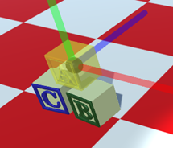
[Selected Object:
Lamp Hood]

[Selected Object:
Play View Camera]

Scene Object Manipulation
Selected objects may be manipulated in 2 ways. The can be rotated or have their positions moved. Both methods of movement use visual manipulators.
Position Manipulation
The position manipulator shows 3 cylinders. The cylinders are ½ transparent and are blue, green, and red. The object can be moved by left clicking one of the cylinders and dragging the mouse. The object will be drug in the direction of the cylinder or it’s reverse direction. When a cylinder is activated for movement, it will be highlighted in yellow.

Rotation Manipulation
Objects can be rotated with the rotation manipulator. When in rotation manipulation mode, a selected object will have 3 quarter disks displayed. The ¼ disks are colored green, blue, and red. They are ½ transparent. An object can be rotated by left clicking one of the ¼ disks and dragging the mouse.
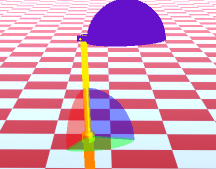
Changing Manipulation Mode
The manipulation mode can be changed in 2 different ways.
The manipulation mode buttons appear in the upper left-hand corner of the edit screen. Click the buttons to change mode. An alternate way to quickly change modes is by pressing the F6 key, which will toggle the modes.
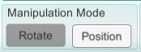
Time Line Editing
The current time can be changed using the timeline slider. The slider can be drug left and right to change the current time. When the time is changed the state of the scene objects will change to reflect their position at that given time.
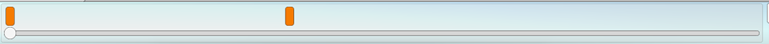
Key Frames
Key frames can be seen right above the time line slider. They appear as small orange rectangles.
· Clicking a key frame will move the current time to the time of the clicked key frame.
· To create a new key frame, manipulate an object in the scene. A new key frame will be created or updated.
· A key frame can be deleted using the Project menu. To delete the key frame, position the current time at the given key frame, then select “Delete Key Frame” from the Project menu.

Animation Saving and Loading
Animations can be saved and loaded.
To save an animation use click the File menu and choose Save. A file dialog will appear. An existing file may be chosen or a new filename by entered.
Bug: There is a bug with file dialogs when the game is run in full screen mode. When the dialog disappears, the application will not reactivate and enter full screen mode. The application must be re-selected from the task bar.
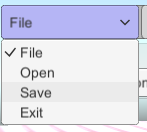

Loading is like saving. Use the file menu and choose Open. A file dialog will appear, and a file may be selected.
Play Mode
Entering Play Mode
Play mode can be entered by using the Project menu. There are 2 options, “Play (Current)” and “Play (Beginning)”. The options will either play the animation from the very beginning or from the current time position.
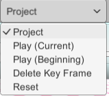
Play Mode Animation
The Play mode view is shown below. In this mode:
· The scene objects will be animated and move according to their key frames.
· The current time is displayed in the upper-right hand corner.
· A stop button appears in the left-hand corner. Clicking this, will set the editor back to edit mode.
· At the end of the animation, the editor will automatically go back to edit mode.

Special Collisions
In play mode there are some special collision detections which change the state of some objects in the scene. The collision detection in the editor is not very accurate. Collisions are detected to early. An attempt was made to have accurate collisions between complex meshes, but the detection was very slow.
Lamp Hood and Blocks
When the lamp hood gets near a block, the block accent color will change to black.
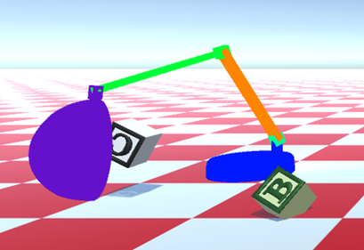
Lamp Hood and Ball
When the lamp hood gets near the ball, the ball will turn white.
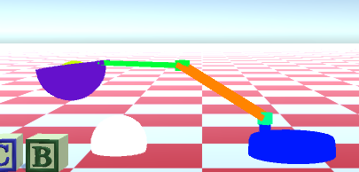
Debugging and Developer Access
Several actions and commands can be accessed through the Mu console. The console is mostly used for debugging and trying out experimental features. The developer console can be shown by hitting the escape key. Hitting the escape key again will hide the console.
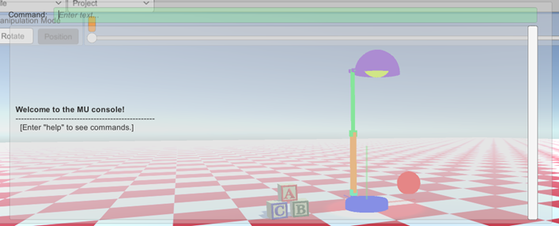
Typing help at the input prompt will show the various commands.
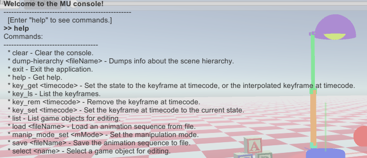
Most of the commands in the console are useful for developers. An example of this is manipulating objects which are manipulatable from the GUI. For example, you can list the object in the scene using the list command. You can then select node primitives or even the whole Root of the hierarchy. After typing “select Root” you can move the entire hierarchy.

Here the entire root is selected and the manipulation mode is set to rotation.
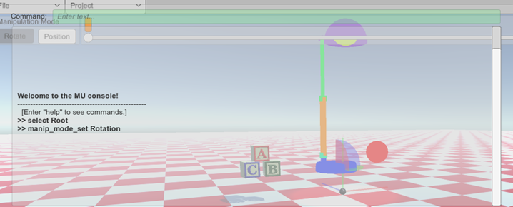
This next screen shot shows the entire hierarchy tilted.